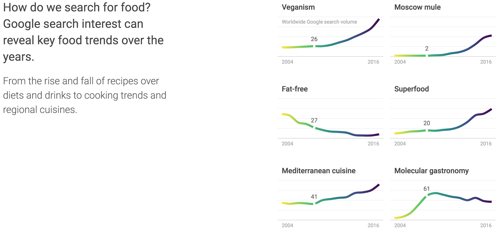

For this assignment I’ve decided to take a closer look at The Rhythm of Food. The Rhythm of Food is a data visualization project built by Moritz Stefaner and his team at Truth & Beauty using Google Trends data. Visualizing food data is not new for Stefaner, as he was also the lead behind the data cuisine project. The Rhythm of Food tries to explore and visualize food culture and the intricacies of food seasonality by looking through Google search data of 201 topics and 135,025 individual data points. The data they’ve used spans 12 years from 2004 to 2016. While most of the data focuses on the US, there are certain cases where they’ve expanded the data to other parts of the world.
I think this one is a really interesting piece as food searches can tell us a lot about certain traditions and cultures and it’s interesting to see how things have a seasonal trend. This kind of data I think could also be helpful for people in the food industry to better understand and cater to their market. To my understanding, there seems to be no bias or underlying agenda within this data visualization.
The main visualization is presented in what they call a ’radial year clock’ to depict seasonal trends for food items. Each radial segment on the chart is to represent the weeks in a year with its distance from the center showing the relative search interest and the color to indicate the year. While I think in general this chart is a good idea, this radial year clock can sometimes be somewhat misleading. This chart is similar to a sunburst chart which is more commonly used to visualize hierarchical data. This chart type has a drawback of making equal data points seem uneven due to radial growth of the chart itself and not the data. These kinds of problems refer back to our Tufte reading on graphical integrity. While the hierarchy might make sense in terms of a timeline and the inner circle being the later years, each year should be treated as equals strings for this purpose. Although not their main goal, looking at different layers of the radial chart makes it seem as if more recent years have had more searches, in terms of width of data point. While carefully crafted data visualization has the potential to translate large swaths of information into vehicles for storytelling, the story might translate differently depending on the chart type. As the Kirk reading has mentioned, the function of data visualization itself is "the presentation and representation of data to facilitate understanding. " If the user is looking at single year strings, it also becomes harder to decipher, as the radial shape blurs the peak and bottoms of the data. So the creator of these visualization also curates the understanding.

I think a helpful part of the website was the introduction section where they explain briefly why choosing this specific chart type bolsters their research and the results they were aiming to illustrate. While a simple line graph can only depict growth over time, it isn’t able to capture seasonal patterns as effectively. So even with the drawbacks of the radial clock, as I’ve noted before, I can appreciate the creators attempt of trying to innovate a better way of illustrating the conclusions he drew. As the Kirk reading mentions, good design is innovative. Overall, I do enjoy the design of this visualization piece.
The overall design is very minimalistic and at first glance shows more trend spotting rather than data representation. I think this really helps accentuate the overall aesthetic of the piece. However, sometimes prioritizing the simplicity of design might take away from the richness of the data and graphical integrity. I think this piece handles this problem well by providing the user the ability to hover over each data point, as well as click on each mapping for further explanation of the trends and data. I feel this is a compromise to one of Tufte’s principles of graphical integrity. "Clear, detailed, and thorough labeling should be used to defeat graphical distortion and ambiguity. Write out explanations of the data on the graphic itself. Label important events in the data."
I appreciate that this piece feels like a story with a beginning and an end. It starts with the user scrolling through an introduction and continues to delve into certain data points they felt was relevant to take note of, such as monthly trends of certain foods and points out specific dishes like Mint Julep. At the end, the piece closes by giving the user the freedom to explore the data on their own. The flowing animations in the beginning make the piece fun and interesting, however, the looping starts to become rather annoying after sometime if the user lingers too long on a specific part of the website. Perhaps they could in addition provide a stop and play button.
Small details in the user interactivity section like having a "charts that look like the food" category helps emphasize that this data is aimed to be used in a light whimsical way. I think the playful colors also help play into that. One of the things that really drew my attention to this piece was the color palette. Although, this is probably a biased opinion as this spectrum of colors more heavily rely on my personal preferences. I think choosing the graduation of colors was also a clever design. As Wattenberg wrote, "we map the properties of our data that we are most interested in into topology and geometry. Other less important properties of the objects are represented through different visual dimensions - tones, shading patterns, colors, or transparency of the graphical elements." I think graduating color changes help the aesthetic and define different strings of data in a subtle manner.
I think the green backdrop as well as the chosen objects on the header and footer of the page depicts a somewhat signalling of green healthy foods. However, there isn’t really any mention of it in the way the data is presented. The use of sketch like pictures I think also help play into the playfulness of the visualization.